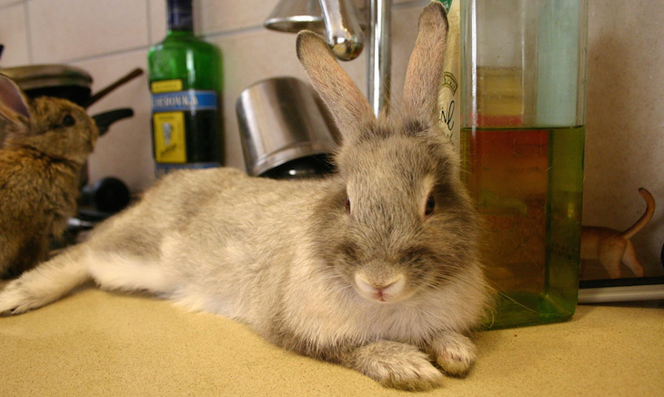
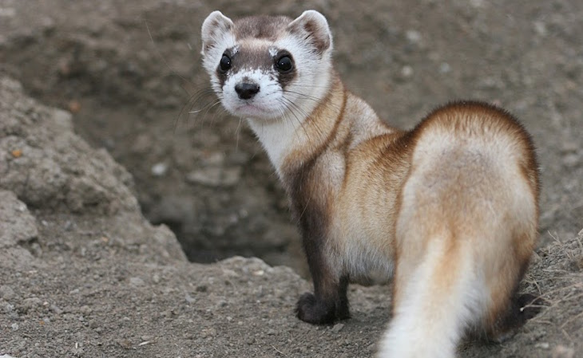
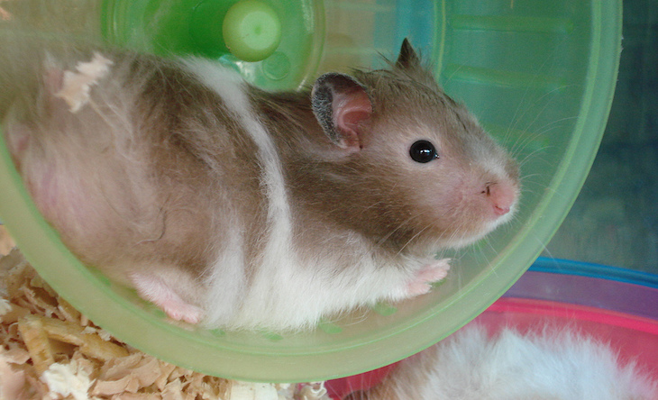
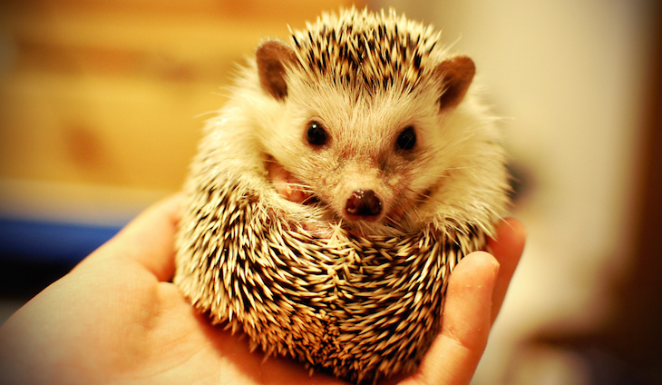

ANIMALES EXÓTICOS
Animales exóticos son denominados todos los animales que por su forma física, colores o las peculiaridades de su estilo de vida, son poco común de ver o son muy llamativos para la vista humana. En algunos casos se consideran exóticos porque se encuentran en peligro de extinción y es muy difícil ver uno de su especie.
¿Qué reconocemos como animal exótico?
El diccionario de la Real Academia de la Lengua Española define la palabra exótico como “Que procede de un país o cultura lejanos y desconocidos”.
Asimismo, la Unión Internacional para la Conservación de la Naturaleza (UICN) indica que el término exótico, o exótica, hace alusión a especies, o subespecies que se encuentran fuera de su hábitat natural y potencial.
Entonces, un animal exótico es aquella especie que es poco conocida, difícil de encontrar y que ha sido introducida en alguna región fuera de su lugar de origen, además que tiene características diferentes a cualquier otro animal.
Los animales exóticos son además considerados lo opuesto a los clásicos animales domésticos o de compañía, son animales raros para tener en casa pero que algunos ya consideran como parte de la familia.
Los animales exóticos los podemos clasificar entre:
- Aves
- Mamífero
- Peces
- Reptiles
Características de los animales exóticos
Para saber si un animal es exótico o no, este debe presentar una serie de características singulares, algunas de estas son:
- Son animales endémicos, es decir, se encuentran en un lugar específico y su presencia únicamente es natural cuando está en esa región.
- Han sido introducidos en un país o región diferente al de su origen.
- Son animales considerados raros y en ocasiones tienen características similares a otros animales. Hasta pareciera ser la unión de dos o más especies.
- En su mayoría se encuentran en peligro de extinción
4 animales exóticos perfectos para ser tu mascota
conejoLos hay de distintos tamaños, pelajes, y son bastantes mas fáciles de manejar de lo que se cree. Aunque si uno decide comprarlos, lo ideal es tenerle un lugar físico y no tenerlos sueltos. Hay que tener un ambiente que lo estimule y una buena dieta, son fáciles de alimentar, ya que les gusta las verduras. Jamás se les debe dar dulces y galletas. Su precio va entre los $10 mil y $20 mil pesos. |
HurónUna de las mascotas exóticas más divertidas, tanto que no tienen nada que envidiarle a los perros y gatos, ya que les gusta mucho la interacción. De hecho, si piensas que debe estar encerrado siempre en una jaula, te equivocas, pues requiere salir y jugar contigo. Son muy interactivas. Su precio es en torno a los $200 mil pesos. |
|  |  |
HámsterEstán los dorados, provenientes de zonas áridas y los enanos, que son asiáticos. Los rusos son nerviosos y pueden saltar y fracturarse. Por eso se recomienda el hámster dorado que son fáciles de cuidar y alimentar, además de económicos. Eso sí, no se le puede regalar a un niño chico, ya que tienden a ser frágiles. Sí a adolescentes en adelante. Su precio va en torno a los $5 mil pesos. |
Erizo africanoSon mascotas pequeñas y no muy interactivos, de hecho casi indiferente. Les encanta a los niños, pero son delicados y tienen problemas digestivo. Nocturnos y defensivos cuando se sienten atacados, algo que se les pasa cuando conocen a su amo. Su precio varía entre $30 y $50 mil pesos. |
|  |  |
Los expertos aconsejan que cualquiera sea el animal que escojas, jamás pienses que son juguetes, ya que como ves, son seres vivos que requieren atención.
Así también, hay que respetar a los animales que se encuentran protegidos por el CITE, un convenio internacional sobre especies amenazadas, como los primates, los choroy, entre otros.
“Lo ideal es que siempre consulten a un veterinario antes de comprar una mascota, saber bien de sus cuidados y saber qué perfil tiene uno para darle la atención. No creerle todo a internet y darle el cariño que necesitan”, concluyó Arrau.